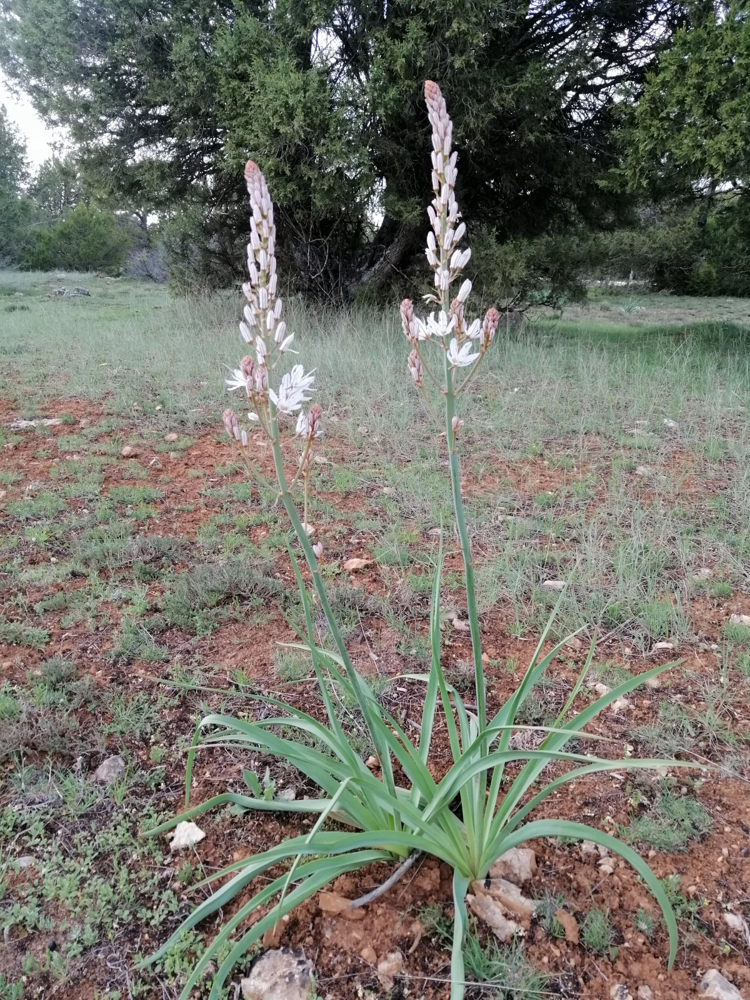

Ayuntamiento de Senés
JARDIN BOTANICO DE ESPECIES AUTOCTONAS DE SENES

Asphodelus ramosus

La gamonera (Asphodelus ramosus) es una planta herbácea perenne muy característica del paisaje mediterráneo, especialmente en terrenos secos, pobres y degradados. Se distingue por su porte robusto y por sus llamativas inflorescencias que destacan en el entorno natural.
Presenta hojas largas, estrechas y de aspecto acintado que nacen desde la base. Sus tallos florales son altos y erectos, pudiendo superar el metro de altura, y sostienen numerosas flores blancas con una línea central oscura en los pétalos, formando espigas muy visibles.
La gamonera se distribuye ampliamente por la región mediterránea, donde crece de forma natural en laderas, campos abandonados y terrenos degradados. Es una especie muy resistente que se adapta bien a suelos secos y condiciones de escasa fertilidad.
Tradicionalmente, la gamonera ha tenido usos limitados debido a la toxicidad de algunas de sus partes. Sin embargo, en la antigüedad se utilizaban sus raíces en ciertos procesos artesanales y como recurso en situaciones de escasez.
La gamonera simboliza la resistencia y la regeneración del paisaje, ya que suele aparecer en terrenos degradados y zonas afectadas por incendios o abandono agrícola.
En Senés, el fruto de la gamonera, el gamón,se ha utilizado como alimento para los cerdos. El gamón es comestible pero en Senés no ha sido consumidos por sus habitantes.
En medicina popular se ha utilizado como diurético..
Florece en primavera, produciendo largas espigas de flores blancas que destacan en el paisaje y aportan valor visual al entorno natural.
Tras incendios forestales, la gamonera suele rebrotar con facilidad, convirtiéndose en una de las primeras especies en colonizar el terreno. Esto la convierte en una planta clave en la recuperación de ecosistemas.